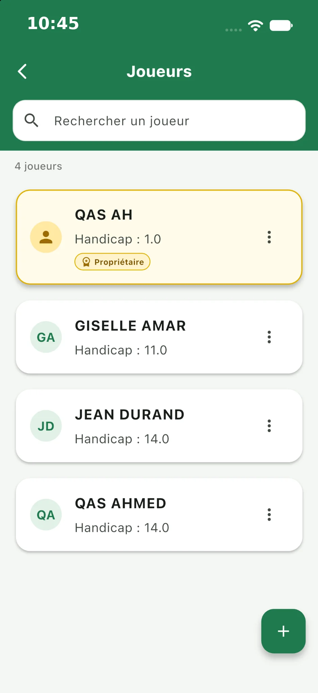
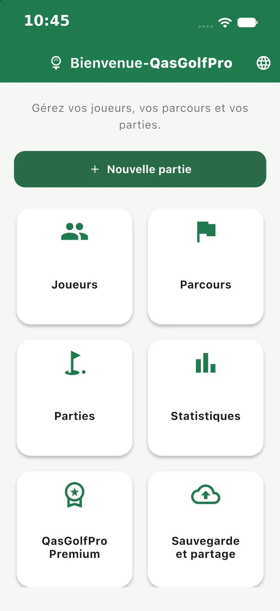
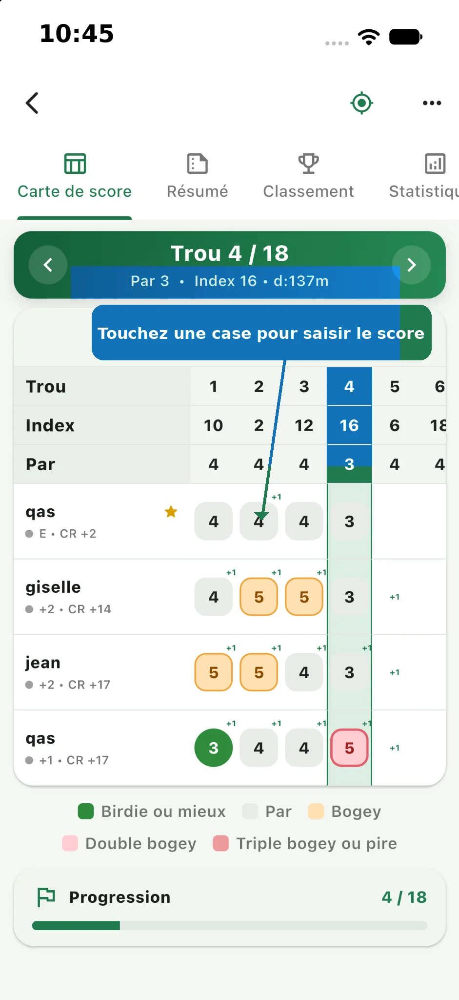
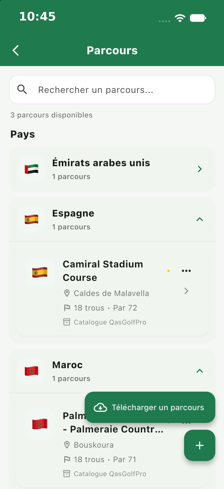
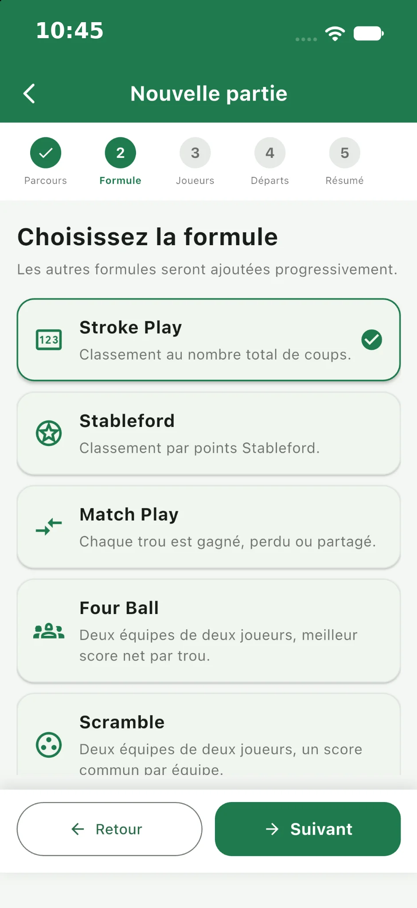
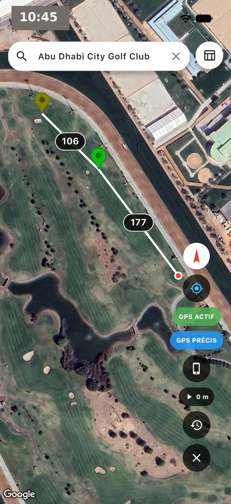
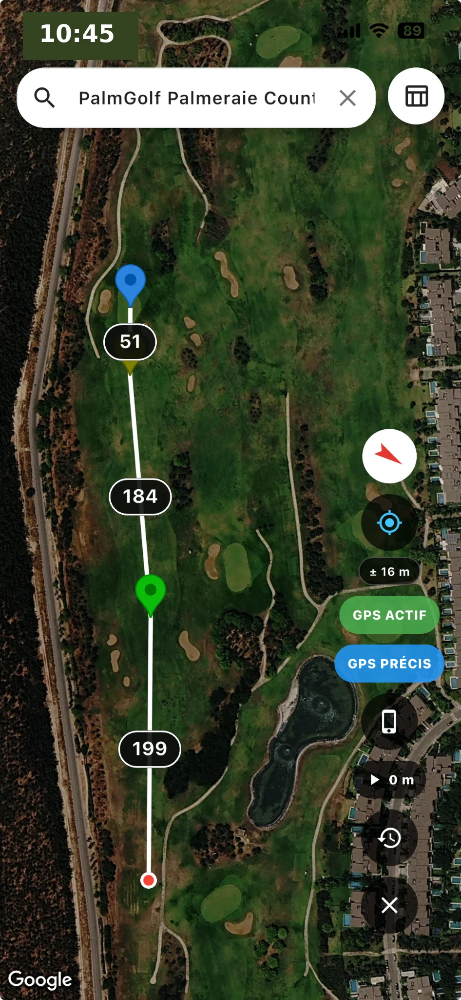
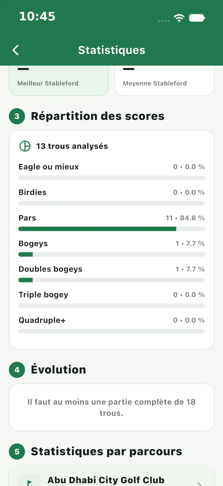
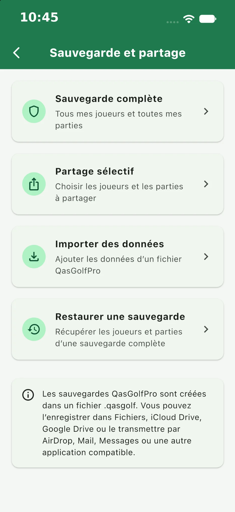

Joueurs
Vos partenaires en un instant
Créez, recherchez et gérez les joueurs facilement.

QasGolfPro réunit votre carte de score de golf, vos parcours, le GPS satellite et vos statistiques sur iPhone. Saisissez chaque trou, choisissez votre formule de jeu et retrouvez vos parties pour les analyser et les partager.


Ajout de joueurs, téléchargement de parcours, création d’une partie, saisie des scores, résumé, GPS, changement de langue, sauvegarde, AirDrop et statistiques globales.
Lancez la vidéo pour suivre une démonstration complète de l’application sur iPhone.
Découvrez les principales fonctions de QasGolfPro.
Créez, recherchez et gérez les joueurs facilement.

Parcours organisés par pays et informations utiles.

Stroke Play, Stableford, Match Play, Four Ball, Scramble et plus.

Suivez la partie trou par trou sans perdre le rythme.
Visualisez le terrain en satellite, votre position et les repères de distance pendant la partie.


Analysez les scores, la progression et les performances.

Sauvegardez, restaurez et partagez vos parties.

Découvrez comment préparer une partie, saisir vos scores et retrouver vos statistiques dans la brochure QasGolfPro.
Téléchargez l’application et gardez l’essentiel du golf à portée de main.
Disponible surAjoutez vos partenaires, choisissez un parcours, créez une partie et sélectionnez une formule de jeu. Saisissez ensuite les scores trou par trou. La vidéo ci-dessus présente ces étapes sur iPhone.
QasGolfPro propose notamment Stroke Play, Stableford, Match Play, Four Ball et Scramble. Choisissez la formule lors de la création de votre partie.
Le GPS affiche une vue satellite, votre position et des repères de distance. Consultez les exemples GPS pour découvrir la présentation du parcours.
QasGolfPro propose des outils de sauvegarde, de restauration et de partage. La démonstration présente la sauvegarde et AirDrop, ainsi que les résultats et les statistiques de partie.
Oui. L’application propose le français et l’anglais. Vous pouvez aussi changer la langue de ce site avec les boutons FR et EN.